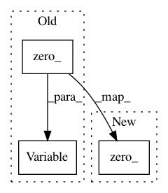

91df825459fd2b6ba587e20730a06333482d7b65,onmt/modules/SRU.py,SRUCell,forward,#SRUCell#Any#Any#,511
Before Change
n_in, n_out = self.n_in, self.n_out
batch = input.size(-2)
if c0 is None:
c0 = Variable(input.data.new(
batch, n_out if not self.bidirectional else n_out*2
).zero_())
if self.training and (self.rnn_dropout > 0):
mask = self.get_dropout_mask_((batch, n_in), self.rnn_dropout)
x = input * mask.expand_as(input)
After Change
n_in, n_out = self.n_in, self.n_out
batch = input.size(-2)
if c0 is None:
c0 = input.data.new(
batch, n_out if not self.bidirectional else n_out*2
).zero_()
if self.training and (self.rnn_dropout > 0):
mask = self.get_dropout_mask_((batch, n_in), self.rnn_dropout)
x = input * mask.expand_as(input)
In pattern: SUPERPATTERN
Frequency: 3
Non-data size: 3
Instances
Project Name: OpenNMT/OpenNMT-py
Commit Name: 91df825459fd2b6ba587e20730a06333482d7b65
Time: 2018-06-08
Author: ubuntu@LatentAttention.xydxq15atrkupdp5x5clbbjsrf.xx.internal.cloudapp.net
File Name: onmt/modules/SRU.py
Class Name: SRUCell
Method Name: forward
Project Name: asappresearch/sru
Commit Name: cece98b06174893b6f793454da2ddd172979239e
Time: 2020-01-29
Author: taolei@csail.mit.edu
File Name: sru/sru_functional.py
Class Name: SRU
Method Name: forward
Project Name: OpenNMT/OpenNMT-py
Commit Name: 91df825459fd2b6ba587e20730a06333482d7b65
Time: 2018-06-08
Author: ubuntu@LatentAttention.xydxq15atrkupdp5x5clbbjsrf.xx.internal.cloudapp.net
File Name: onmt/modules/SRU.py
Class Name: SRU
Method Name: forward